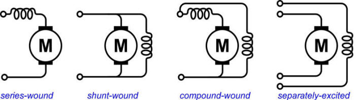
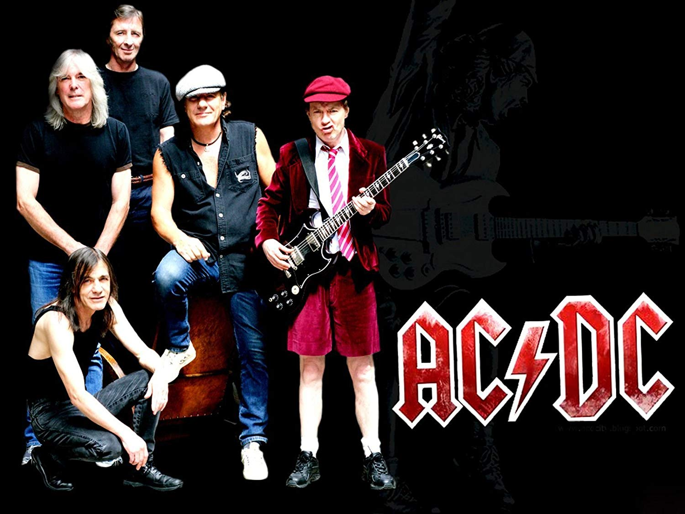
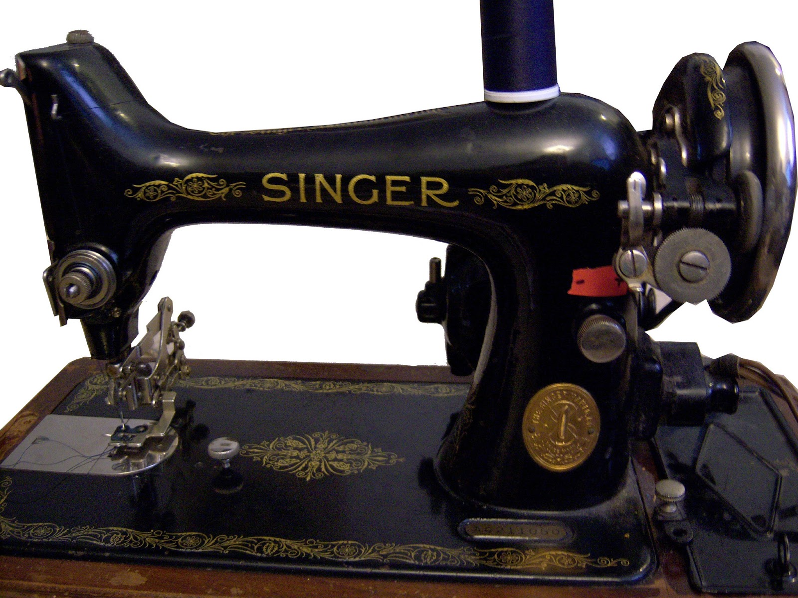
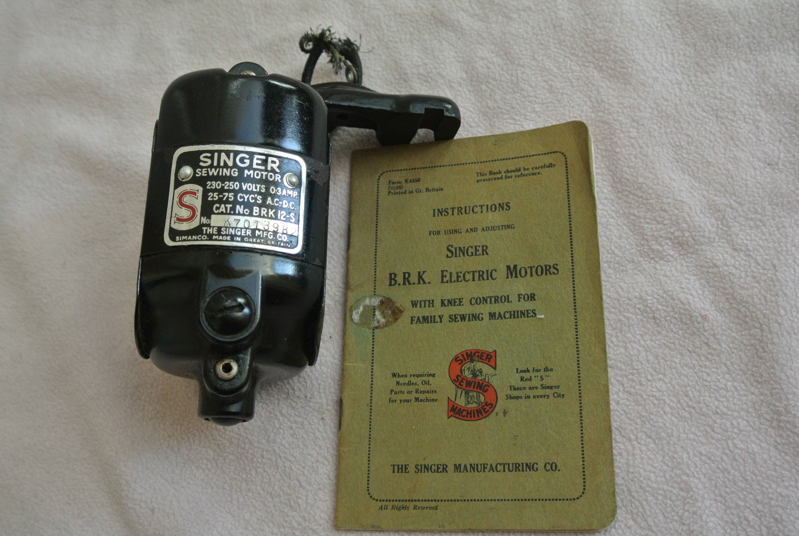

class: center, middle # EE-361 # DC Machine Types ## Ozan Keysan [ozan.keysan.me](http://ozan.keysan.me) Office: C-113 <span class="meta">•</span> Tel: 210 7586 --- # Review: -- Induced Voltage in Armature -- ## \\(E\_a = K\_a \omega\_m \Phi\_{pp}\\) -- - ### \\(E\_a\\): Induced armature voltage (DC-average) - ### \\(K\_a\\): Armature Constant - ### \\(\omega\_m\\): Mechanical Speed (rad/s) - ### \\(\Phi\_{pp}\\): Flux per-pole (DC-average) --- # Equivalent Circuit of a DC Motor <img src="http://cnx.org/resources/1a0fc7a424e633c62ac4fb3e20d75ceb/graphics1.png" alt="Drawing" style="width: 600px;"/> -- ## If \\(V\_a > E\_a\\) motoring action -- ## If \\(E\_a > V\_a\\) generating action --- # Torque Relation <img src="http://cnx.org/resources/1a0fc7a424e633c62ac4fb3e20d75ceb/graphics1.png" alt="Drawing" style="width: 500px;"/> ## \\(P\_{mech} = T \omega = E\_a I\_a \\) -- ## \\( T \omega = K\_a \omega \Phi\_{pp} I\_a \\) -- ## \\(T =K\_a \Phi\_{pp} I\_a \\) --- # DC-Machine Equations - ## Induced Voltage Proportional to Speed ## \\(E\_a = K\_a \omega\_m \Phi\_{pp}\\) -- - ## Torque Proportional to Armature Current ## \\(T =K\_a \Phi\_{pp} I\_a \\) --- #Power Flow in a DC Motor <img src="http://blogs.itb.ac.id/el2244k0112211027gemarizaldi/files/2013/04/shuntppwerflow.png" alt="Drawing" style="width: 600px;"/> -- ## What about a generator? --- # Efficiency ## \\(\eta = \dfrac{P\_{out}}{P\_{in}}\\) -- ## Efficiency of a DC Motor ### \\(\eta = \dfrac{P\_{mech}}{P\_{elec}}\\) -- \\(=\dfrac{T\_m \omega\_m}{V\_t I\_a}=\dfrac{T\_m \omega\_m}{T\_m \omega\_m + Losses} \\) --- # Efficiency ## \\(\eta = \dfrac{P\_{out}}{P\_{in}}\\) ## Efficiency of a DC Generator ### \\(\eta = \dfrac{P\_{elec}}{P\_{mech}}\\) -- \\(=\dfrac{V\_t I\_a}{T\_m \omega\_m}=\dfrac{V\_t I\_a}{V\_t I\_a + Losses} \\) --- # DC Machine Types -- ## Everthing is same just different ways of connecting the field winding! --  ### As a result \\(\Phi\_{pole} \\) is not constant but a function of field current. --- ## - Series Excited ## - Shunt Excited ## - Compound Machines ## - Separately Excited --- # Separately Excited DC Machines <img src="http://cnx.org/resources/1a0fc7a424e633c62ac4fb3e20d75ceb/graphics1.png" alt="Drawing" style="width: 674px;"/> ### Field is excited with a separate source ### Flexible Control (Field Current controls \\(\phi\_{pp}\\)) --- # Magnetization Characteristics ## What is the relation between \\(I_f\\) and \\(E_a\\)? --  --- #Magnetization Characteristics ### In the Linear Region ## \\(\phi = K_f I_f\\) -- ### Induced Voltage ## \\(E_a = K_a \omega_m \phi = K_a \omega_m K_f I_f\\) -- ### Torque ## \\(T = K_a K_f I_a I_f\\) --- ## We have a motor running at constant speed under constant load. -- ## What happens if we suddenly increase the load? --- #Speed Regulation -- ## Speed Regulation \\(=\dfrac{\omega\_0 - \omega\_{rated}}{\omega\_{rated}}\\) - ### \\(\omega_0\\) : Rotational Speed at no-load - ### \\(\omega\_{rated}\\) : Rotational Speed at full load ####(Note the similarity with the voltage regulation in transformers) --- # Now let's operate as a generator ## Constant mechanical power, constant speed. -- ## What happens if we increase the electrical load (armature current)? --- # Separately Excited DC Generator ## Vt-Ia Characteristics <img src="http://nuclearpowertraining.tpub.com/h1011v2/img/h1011v2_92_1.jpg" alt="Drawing" style="width: 600px;"/> --- # Voltage Regulation ## Terminal voltage difference from no-load to full-load #\\(=\dfrac{V\_{t(no-load)} - V\_{t(full-load)} }{V\_{t(full-load)}}\\) --- #Armature Reaction ### What happens to the airgap magnetic field if a current applied? ## Increases at the upper portion, decreases at the lower portion ## Flux density distribution is distorted. --- ## Armature Reaction ## Becomes significant with increasing \\(I_a\\) <img src="http://commonelectricaldoubts.files.wordpress.com/2014/05/brush.png" alt="Drawing" style="width: 500px;"/> #Armature Reaction ## Becomes significant with increasing \\(I_a\\) <img src="http://2.bp.blogspot.com/-PMuoT2hVbUs/Ux_zN18g4jI/AAAAAAAAAmM/Tkde5aoHOLk/s1600/armature+reaction.png" alt="Drawing" style="width: 450px;"/> #Armature Reaction ### Armature reaction can be neglected at small \\(I_a\\) ### \\(\phi\_f = \dfrac{MMF}{\mathrm{R}\_{eq}}= \dfrac{N\_fI\_f}{\mathrm{R}\_{eq}}\\) ### With armature reaction ### \\(\phi\_f = \dfrac{N\_fI\_f - N\_a I\_a}{\mathrm{R}\_{eq}}\\) ### Thus, \\(E_a\\) reduced due to increasing \\(I_a\\) ### - Vt-Ia Characteristics? --- # Shunt Wound DC Machine -- <img src="http://electriciantraining.tpub.com/14177/img/14177_29_1.jpg" alt="Drawing" style="width: 400px;"/> -- ## Field winding is connected in parallel to the Armature -- ## \\(V_f=V_t\\) -- ==> \\(I_f = V_t/R_f\\) --- # Shunt Motor <img src="http://electriciantraining.tpub.com/14177/img/14177_29_1.jpg" alt="Drawing" style="width: 400px;"/> ## Shunt motor has good speed regulation ###(5-15% difference from no load to full load) --- # Shunt DC Generator ## Can we start generating voltage without any external source(i.e. self-excitation)? -- <img src="http://4.bp.blogspot.com/-2LzEQAU5wjk/TePx5d9UEaI/AAAAAAAAABI/ESfExlaYVFU/s320/10.JPG" alt="Drawing" style="width: 500px;"/> --- # Shunt DC Generator ## Self-Excitation only occurs if Rf is low enough <img src="http://3.bp.blogspot.com/-Kp4Jzkv5uk4/TePyi8Nd1eI/AAAAAAAAABM/yKX0knuhhuA/s320/11.JPG" alt="Drawing" style="width: 500px;"/> --- #Shunt DC Generator ## \\(V_t\\)-\\(I_L\\) Characteristics -- <img src="http://www.scrigroup.com/files/limba/engleza/electronics/63_poze/image046.jpg" alt="Drawing" style="width: 500px;"/> --- # Series Wound DC Machine <img src="http://electriciantraining.tpub.com/14177/img/14177_44_1.jpg" alt="Drawing" style="width: 450px;"/> ## Field winding in series with armature ## Field current = Armature Current ==> \\(I_f = I_a\\) --- # Series Wound DC Machine <img src="http://electriciantraining.tpub.com/14177/img/14177_44_1.jpg" alt="Drawing" style="width: 450px;"/> ## What happens if AC is applied to series DC motor? --- # Universal Motor ## Series DC motors work both with DC and AC <img src="http://woodgears.ca/motors/dc_02.jpg" alt="Drawing" style="width: 450px;"/> ## [Universal Motor](https://www.youtube.com/watch?v=0PDRJKz-mqE) [More Information](https://en.wikipedia.org/wiki/Universal_motor) --- # What is the origin of AC/DC band's name? ## [Highway to Hell](https://youtu.be/gEPmA3USJdI?t=89)  ---  ---  --- # Series Wound DC Motor <img src="http://electriciantraining.tpub.com/14177/img/14177_44_1.jpg" alt="Drawing" style="width: 350px;"/> ### \\(V\_t = E_a + (R\_a + R\_f) I_a\\) -- ### \\(E_a = K_a \omega_m \phi \\) ==> \\(\phi = K_s I_a\\) -- ### \\(T_e = K_a \phi I_a = K_a K_s I_a^2\\) --- # Series DC Motor <img src="http://www.tpub.com/doeelecscience/electrical%20science2_files/image664.jpg" alt="Drawing" style="width: 600px;"/> ## Never run a series DC motor at no load! --- # Series DC Motor <img src="http://3.bp.blogspot.com/-cUu8u-bZm0o/U7qEkWngbRI/AAAAAAAAA58/-7F6w5isurc/s1600/Characteristics+of+DC+series+motor.png" alt="Drawing" style="width: 800px;"/> ## Torque increases with the square of the armature current --- # Series DC Motor <img src="http://www.trainweb.org/tgvpages/images/maintain/bogie.jpg" alt="Drawing" style="width: 400px;"/> ### High starting torque ### Applications: Traction motors,cranes, ### At no load speed increases dangerously --- # Series DC Generator <img src="http://electriciantraining.tpub.com/14177/img/14177_44_1.jpg" alt="Drawing" style="width: 450px;"/> ### Not suitable to be used as a generator as the voltage regulation is very bad. --- # Compound DC Machines ## Shunt and Series windings combined together -- <img src="http://electriciantraining.tpub.com/14177/img/14177_30_1.jpg" alt="Drawing" style="width: 400px;"/> ### Series winding can be additive(more common) or subtractive --- # Compound DC Generators <img src="http://www.industrial-electronics.com/images/elec3-4-3.jpg" alt="Drawing" style="width: 600px;"/> ### Commonly adjusted to be flat compounded, thus to achieve zero voltage regulation. --- # Example: -- ## A 10 kW DC Shunt motor connected to 200 V supply and driving a load with the following characteristics. -- ## \\(P_l = k n^2 = 3.9\;10^{-3} n^2\\) (n: speed in rpm) -- ## Friction losses of the motor are constant and equal to 250 W. -- ## Field winding is \\(40\; \Omega\\), --- ## a) Calculate the motor speed if the motor is supplying rated power from its shaft at steady state. --- ## b) Determine the armature current and armature resistance of the motor at rated load. ## Induced voltage vs. field current characteristics obtained at 1500 rpm are as follows: ## <table> <tr> <th>Ea(V) </th> <th>153.7 </th> <th>161.8 </th> <th>164.8 </th> <th>170.2 </th> <th>175 </th> <th>178.3 </th> </tr> <tr> <td>If(A)</td> <td>2</td> <td>3</td> <td>3.3</td> <td>4</td> <td>5</td> <td>6</td> </tr> </table> --- ## c) Calculate the total current drawn from the terminals and motor efficiency <!-- d) If the shaft speed is measured as 1700 rpm, when the armature current is 54.8 A; ## i) Calculate the generated voltage (neglect armature reaction), ## ii)Calculate the generated voltage with armature reaction (refer to magnetization curve), ## iii) Calculate the extra field current supplied to compensate the armature reactance --> --- # Summary ### All DC machines have same equations; -- but different field winding connections give different characteristics. -- ## DC Machine Types ### - Separately Excited ### - Shunt Excited ### - Series Excited ### - Compound Machines --- ## You can download this presentation from: [keysan.me/ee361](http://keysan.me/ee361)